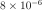
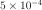

4.1.22. Hot: collisional ionisation equilibrium absorption model¶
This model calculates the transmission of a plasma in collisional ionisation equilibrium with cosmic abundances.
For a given temperature and set of abundances, the model calculates the ionisation balance and then determines all ionic column densities by scaling to the prescribed total hydrogen column density. Using this set of column densities, the transmission of the plasma is calculated by multiplying the transmission of the individual ions.
The transmission includes both continuum and line opacity. For a description of what is currently in the absorption line database, we refer to Absorption model theory. By default, the model mimics the transmission of a neutral plasma by setting the default temperature to 8E-3 eV (

keV).Please note that since SPEXACT updates 3.06.00 and 3.06.01, the behaviour of the hot model at low temperatures changed. Since these versions, SPEX includes also charge exchange processes in the hot model and these change the ionisation balance at low temperature. While for previous SPEX versions, setting a temperature of

was enough to obtain a neutral gas, now, the temperature needs to be set to keV to obtain the same result.Since the hot model is mostly used to model neutral gas in the ISM, we decided to set the default temperature to the minimum temperature of keV. This should result in a neutral gas and give the user the result most users expect.
4.1.22.1. ISM absorption¶
The atomic line transitions calculated with hot may not be fully visible
in real ISM absorption spectra, since part of the material can be locked
in dust. Until the dust-to-gas ratio is properly defined, a limiting case
can be assumed in which the lines are completely depleted. This assumption
is applied by setting ism to 1. This assumption should only be used
when the expected absorption lines are not observed in real data.
Work is in progress to provide a better ISM model.
4.1.22.1.1. Model parameters¶
The parameters of the model are:
- nh:
Hydrogen column density in

 .
Default value:
.
Default value:  (corresponding to
(corresponding to
 , a typical value at low Galactic
latitudes).
, a typical value at low Galactic
latitudes).- t:
the electron temperature
 in keV. Default
value: keV.
in keV. Default
value: keV.- rt:
the ratio of ionization balance to electron temperature,
 in keV. Default
value: 1.
in keV. Default
value: 1.- hden:
Hydrogen density in

 .
Default value:
.
Default value:  (corresponding to
(corresponding to
 , a typical value for the ISM).
, a typical value for the ISM).- ism:
Switch to mute atomic line transitions. See description above. Default value: 0
The following parameters are common to all our absorption models:
- icov:
Type of the covering fraction. Default value: 2 (constant, set by fcov). If icov=1, full covering is applied. If icov=3, covering fraction follows a tangent function that increases with energy. If icov=4, covering fraction follows an inverse tangent function that decreases with energy. See description in
pion.- fcov:
The covering factor of the absorber if icov=2. Default value: 1 (full covering). If icov=3 or 4, it sets the covering factor at the high energy end.
- lcov:
The covering factor of the absorber at the low energy end. Default value: 1. lcov is applied only when icov=3 or 4. See description in
pion.- ecov:
The energy when the covering factor changes from lcov to fcov. Only applied if icov=3 or 4.
- acov:
The width of the transit on covering factor. Only applied if icov=3 or 4.
- v:
Root mean square velocity

- zv:
Average systematic velocity
 of the absorber (using relativistic Doppler shift)
of the absorber (using relativistic Doppler shift)
The following parameters are the same as for the cie-model (Cie: collisional ionisation equilibrium model):
- ref:
Reference element
- 01…30:
Abundances of H to Zn
- file:
Filename for the nonthermal electron distribution
- b:
External magnetic field strength in Gauss. See cie section. Default value: 0
Recommended citation: de Plaa et al. (2004) and Steenbrugge et al. (2005).